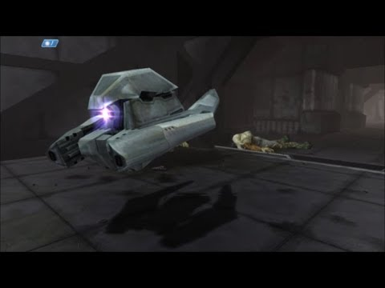

GodMan
Any one approach anything on flying AI? I’m thinking of maybe taken the approach were flying AI can move to designated points in the air using predefined points in the environment.

Any one approach anything on flying AI? I’m thinking of maybe taken the approach were flying AI can move to designated points in the air using predefined points in the environment.

Don’t overcomplicate things and vector math is your friend.
| Dot Product | Cross Product |
|---|---|

|

|
Maybe also splines?
Are there any obstacles in this airspace, btw?
No their are no obstacles. It’s just an open map, the same one in my screenshots in the Random Project Shots thread. Unless you count cliff walls, but mostly an open area.
I’m just looking for something, for my sentinels from halo.

Would that be more of a (strafe-)hovering with target tracking instead of the airplane I had in mind?

@Modanung Yes they hover while targeting an enemy. Yes lol no airplane like movement. .
In that case I imagine something like:
A custom
LogicComponent
(with probably an abstract AI class in between) that knows at least two states: Patrol and alert. In the patrol state the AI would find the nearest point on a predefined spline path and accelerate towards a point further down the same path. When it sees a target it should probably stop patrolling and instead orbit and attack its target from a preferred distance.

Not sure if that would be overkill, but you could have a look at opensteer:
code(seems to be a newer fork):
https://github.com/meshula/OpenSteer
docs:
http://opensteer.sourceforge.net/doc.html
There were a very good website, that showed all types of steering behaviour, but those were java-applets which are not supported anymore.

Thanks everyone. I might look into @Modanung approach first.